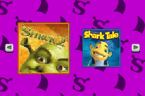

2 in 1 Game Pack - Shrek 2 + Shark Tale (USA)
Stateless / Passcode 📺 Joybus 💾 MultiBoot
Cartridge Identity
- Game Code
BS7E(FamilyBS7)- Header Title
SHREK SHARK- Maker / Revision
52/ rev0- ROM Size
- 16.0 MiB (16,777,216 B)
- Save Media
None / Unknown- SHA-256
6898b2b87b3a555af867f59e77820f44de21f403a5b1cd1d4c9ffcea1623e427- Engine / SDK Group
comm-005(81 families)
Screenshots


Link Cable & Multiplayer Communications
This title contains detected communication capabilities: 📺 Joybus 💾 MultiBoot.
Detailed protocol specifications, SIO registers, Joybus commands, and MultiBoot sequences are documented in the Link & Multiplayer Reference.
- GameCube Joybus
- Register literal
REG_JOY_RECV(0x04000150) at offset0x516fcc - GameCube Joybus
- RCNT mode literal
0x0000c304(mode0xC000) at offset0x09c760(RCNT literal at0x09c75c) - GameCube Joybus
- RCNT mode literal
0x0000c304(mode0xC000) at offset0x8abdd4(RCNT literal at0x8abdd0) - Single-Cart MultiBoot
- Single-Cartridge MultiBoot (Download Play) client/server handler · Thumb SWI 0x25 (
0xDF25):0x4c0390,0x4c6f64,0x4eea22,0x4ef590
Cartridge Storage Architecture: Stateless / Passcode
Zero non-volatile battery hardware: This cartridge PCB contains ROM only (no SRAM, Flash, or EEPROM chips). Progression is preserved via on-screen passcodes or session-only gameplay. No
.sav file is generated or required.
ROM Assets, Compression & Audio
- BIOS Compression
- LZ77 (
0x10): 254 streams · RLE (0x30): 4 streams - ROM Pointer Tables
- 30 tables (0 pointing to validated compressed streams)
- SDK Backup Tags
EEPROM_V124,EEPROM_V124
Text, Fonts & Scene Data
- Primary Text Encoding
- Plain ASCII (uncompressed) (
501ASCII strings ·1Shift-JIS runs) - Font & VWF Indicators
- VWF Width Table 1bpp Font · BIOS SWIs: BitUnPack
0x10:2· LZ770x11/12:8· Huffman0x13:5· RLE0x14/15:5 - Scene & Packaging
33ROM pointer tables (≥32 entries,2≥200) ·215relativeu32TOCs ·169OAM metasprite hits · FourCC:GAX2
Hardware MMIO Subsystems
ppu_display0x8001a5c,0x88a9504,0x88ac520